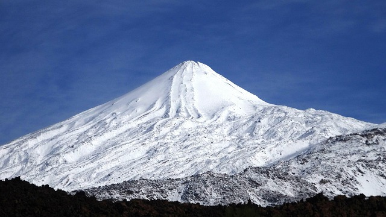
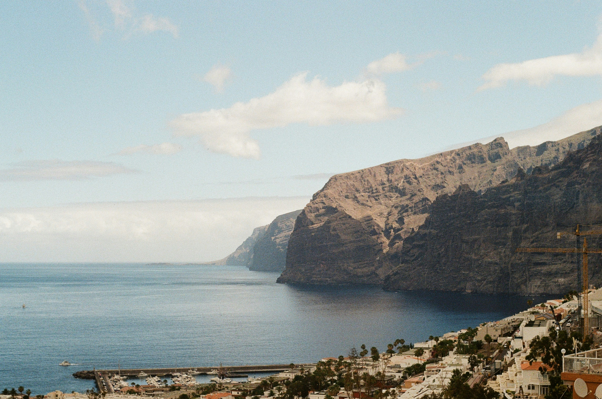
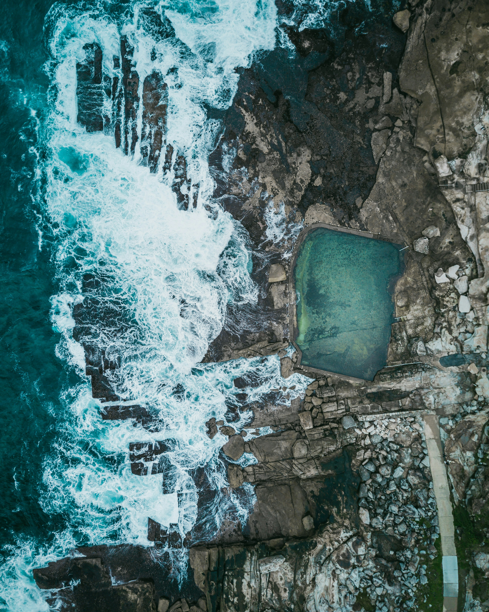
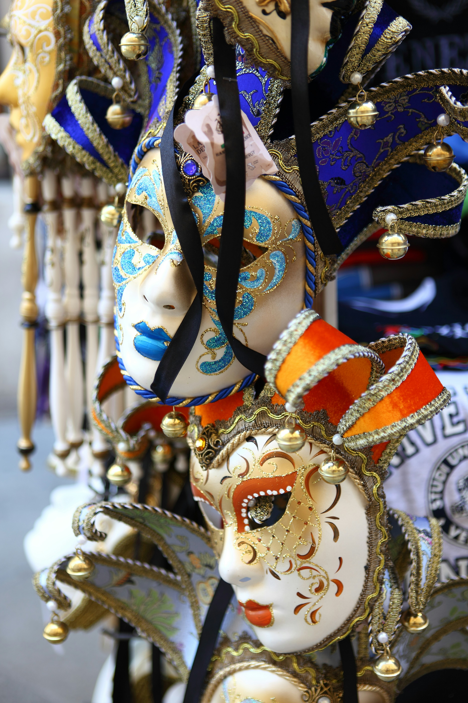
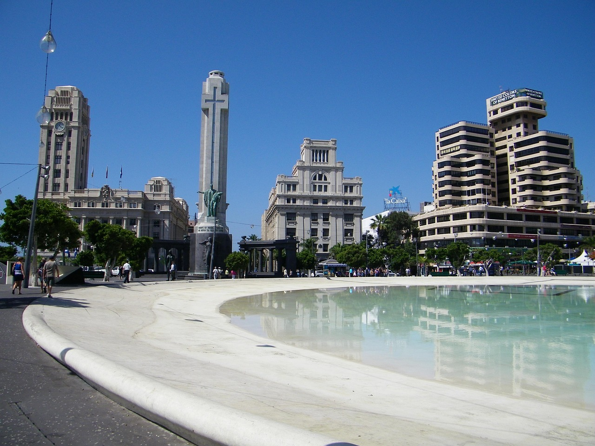
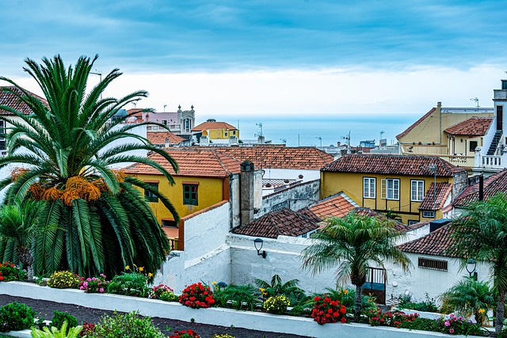
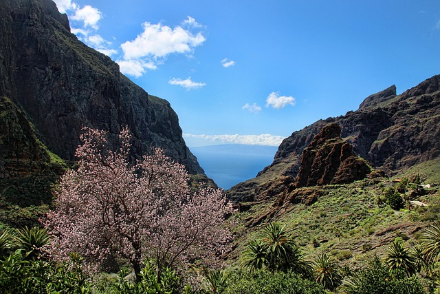

Atrakcije i mjesta koja se moraju posjetiti
El Teide
Park je od 2007. UNESCO-ov popis svjetske baštine i pripada mreži Natura 2000, koja prepoznaje najvrjednija prirodna područja u EU. Krunski dragulj parka je Mount Teide, zadivljujući vulkan i najviši vrh na Kanarima i cijeloj Španjolskoj. Na visini od gotovo 12 190 stopa, to je nešto što oduzima dah za vidjeti na Tenerifima, izdaleka i izbliza. Da bi se doista doživjela veličanstvenost ove planine, penjanje na Teide, bilo pješačenjem ili vožnjom žičarom je obavezan dio posjete Tenerifima. Na taj način moze se vidjeti jedinstvenu floru i krajolik ovog područja. Dosežući visinu od 3718 metara, planina Teide je vrh Španjolske i treća najveća vulkanska struktura na svijetu. Njegova veličanstvena prisutnost dominira cijelim otokom. A za vedrih dana može se vidjeti s drugih otoka u arhipelagu.
Los Gigantes
Los Gigantes je ljetovalište u općini Santiago del Teide na zapadnoj obali Kanarskog otoka Tenerife. Njegovo glavno obilježje su divovske stijene, Acantilados de Los Gigantes, koje se uzdižu iz mora do visine od 500-800 metara (1640-2625 stopa) po kojima je grad i dobio ime. Los Gigantes znači "Divovi". Litice u Los Gigantesu, Acantilados de Los Gigantes na španjolskom, jedna su od glavnih turističkih atrakcija otoka. U selu postoje tri vidikovca, glavni na glavnoj cesti prema Tamaimo, drugi iznad sportskog kluba i treći na obalnoj stazi oko hotela Barcelo. Selo ima mnogo malih trgovina i restorana koji opslužuju turiste koji posjećuju to područje, posebno na jednosmjernoj petlji oko crkve i trga, a također u blizini marine i plaže.
Anaga rural park

Samo nekoliko minuta vožnje od glavnog grada Santa Cruz de Tenerife nalazi se krajobrazni park Anaga, proglašen rezervatom biosfere, čija su prirodna bogatstva iznimno očuvana. Gledatelju se pruža slika koja oduzima dah kada gleda prekrasan planinski lanac, koji se strmo uzdiže do nazubljenih vrhova. Duboke doline i klanci protežu se odozgo prema dolje do obale, gdje završavaju bezbrojnim plažama na kojima se možete osvježiti. Faunu i floru ove regije karakterizira velika raznolikost endemičnih vrsta. Krajobrazni park Anaga zauzima veliki dio ovog planinskog lanca na krajnjem sjeveroistoku Tenerifa. S ukupnom površinom od gotovo 14.500 hektara, pokriva značajan dio otoka i proteže se preko općina La Laguna, Santa Cruz de Tenerife i Tegueste. Jedno je od najvažnijih rekreacijskih područja općine, a također je vrlo popularno među turistima.
Prirodni bazeni
Morski bazeni uglavnom su smješteni na sjeverozapadu Kanarskih otoka i predstavljaju vrlo poseban doživljaj kupanja jer gostima pružaju osjećaj kupanja usred mora, a istovremeno pružaju zaštitu zatvorenog bazena. Ove prirodne bazene stvorile su lava koja se slijevala u more. Kupalištima se može pristupiti sigurnim stepenicama, sunčalištima i spojnim stazama i pogodna su za kupanje; oprez se savjetuje samo kada je val jak. Bez valova, mirno i glatko čak i kad je more valovito. Ove prirodne formacije nalaze se posvuda na Kanarskim otocima, stvarajući prirodne bazene zaštićene od plime i struja, gdje ljudi svih dobi mogu uživati u vodi. U neke od njih dodane su stepenice, staze i skakaonice kako bi se još lakše koristili. Najpoznatije su u sjevernom dijelu Tenerifa, a dvije su vrlo blizu jedna drugoj. To su Charco de La Laja i Charco del Viento, dvije vulkanske formacije koje čine prirodne bazene. Prva je u San Juan de la Rambla, i iako je do nje vrlo lako doći, vjerojatno ćete trebati vremena da dođete do vode. Zašto? Pogled s vidikovca i sve fotografije koje želite snimiti. Do drugog je također lako doći s ceste za Icod de los Vinos. Ali i ovdje se pruža prekrasan pogled - na planinu Teide, najviši vrh Španjolske. Charco del Viento ima različita područja za kupanje, neka su s pijeskom, druga sa stjenovitim lukovima, ali sva s kristalno čistom vodom. Prirodni bazeni Bajamara udaljeni su oko 15 kilometara od povijesnog središta San Cristóbal de La Laguna, UNESCO-ve svjetske baštine, pa se ti posjeti mogu lako kombinirati. Postoji nekoliko kupališta, uključujući dva velika bazena, jedan za djecu, i plažu od žutog pijeska zaštićenu od mora. Konačno, Caletón je u Garachicu, koji ima jedno od najfotogeničnijih povijesnih gradskih središta na otoku. Kombinira mirne bazene s morskim uvalama. Svi oni imaju lijep pogled na obalu.
Tenerife karneval
Tisuće posjetitelja putuju iz godine u godinu kako bi proslavili ovaj festival koji ne poznaje granice i ne poznaje samo jednu dužnost: zabaviti se. Vrući ritmovi, boja, šarm, blještavilo i naravno odličan show. Karneval u Santa Cruz de Tenerife predstavlja se kao "najbrazilskiji" karneval koji se slavi u Španjolskoj. Internacionalno je jedan od najpopularnijih u svijetu. Dva tjedna neprekidnog užitka, slobode i mašte koji ispunjavaju ulice grada Kanarskih otoka. Karneval na Tenerifima smatra se drugim najvećim na svijetu. Samo Rio de Janeiro može konkurirati Tenerifu. Čak ni Rajnska oblast, koja tradicionalno dominira karnevalom u Njemačkoj, ne može stati na kraj najvećem Kanarskom otoku kada je u pitanju ova tema. I unatoč teškim ekonomskim uvjetima, Kanarski otoci ne dopuštaju da im se oduzme njihov “Karneval”. Čak iu vrijeme kada je karneval bio zabranjen, slavio se redovito i prerušen u “zimski festival”.
Loro Park

TripAdvisor je Loro Parque proglasio najboljim zoološkim vrtom na svijetu na temelju iskustva svojih posjetitelja. To je čarobno mjesto koje nudi dom za više od deset tisuća egzotičnih i ugroženih životinja, koje predstavljaju više od pet stotina vrsta i podvrsta sa svih strana Planeta. Njegovi impresivni sadržaji, savršena rekreacija njihovih prirodnih staništa i više od milijun zadovoljnih posjetitelja svake godine, čine Loro Parque "must" na Kanarskim otocima. Loro Parque je ove godine za svoje posjetitelje pripremio dva nevjerojatna iznenađenja: malog nilskog konja, ugroženu vrstu iz zapadne Afrike koja će kao novi dom imati impresivan kompleks; i Zen vrt, prvi podvodni japanski vrt na svijetu. Loro Parque, pravo je zoološko veleposlanstvo koje je već osvojilo svoje goste savršenom rekreacijom prirodnih staništa svake životinje koju ćete ovdje otkriti zajedno s nevjerojatnom ljepotom Parka, njegovom bujnom vegetacijom i neprestanom borbom za očuvanje životinje. svijet. Željeli bismo vam dati obilazak nekih od najamblematičnijih životinjskih izložbi. Orca Ocean smatra se najinovativnijom i najmodernijom instalacijom na svijetu, izgrađenom posebno kako bi zajamčila dobrobit svojih šest dragocjenih orki, kao i za aktivnosti očuvanja, obrazovanja i podizanja svijesti javnosti. Veličanstvenost i inteligencija ovih veličanstvenih životinja ostavit će vas bez riječi. Lavlje kraljevstvo. Impresivna rekreacija afričke savane i njezinih spektakularnih lavova. iako lava nazivamo "kraljem džungle", na populaciju ove ljupke životinje uvelike utječu ljudske aktivnosti. Pozivamo naše posjetitelje Lion's Kingdom da se pridruže borbi za očuvanje vrste. Veleposlanstvo životinja. To odražava doprinos Loro Parquea i Zaklade Loro Parque svijetu koji sve više i više dolazi pod pritiskom okoliša uzrokovanog ljudima. Kroz široke prozore posjetitelj može uživati u upoznavanju Baby Stationa, vrtića i klinike te vrhunskog znanstvenog laboratorija. Posjetitelji će uživati u upoznavanju impresivne inteligencije papiga u svjetski poznatom institutu Max Planck.
Santa Cruz de Teneriffa
Santa Cruz de Tenerife je slavan, graciozan i senzacionalno pun događaja glavni grad otoka vječnog proljeća. Okružen je fascinantnom pozadinom planina Anaga u prirodnom i privlačnom zaljevu na sjeveroistočnoj obali Tenerifa. Privilegirana lokacija poziva posjetitelje i lokalno stanovništvo da istražuju otok iz Santa Cruza. Mogući su brojni izleti u obližnje i uzbudljive planine Anaga, jer vrsta i višestruka, a ponekad i endemična vegetacija na ovom području impresionira svojim bojama, oblicima, mirisima i originalnošću. Šume lovora odmah vas okružuju ugodnim mirisom i sjenovitim stablima, dok se kapljice rose sjajno presijavaju na sunčevoj svjetlosti. Ljubitelji planinarenja, a posebno planinari i penjači ovdje će doći na svoje i doživjeti rijetko lijep komadić prirode. No, ako vas vuče more, možete birati između nekoliko plaža. Ali uglavnom legendarna Playa de Las Teresitas privlači posjetitelje svojim posebnim karipskim štihom. Jer to je vjerojatno jedina svijetla pješčana plaža na Tenerifima, koja ima i blagi nagib pa je stoga idealna za obitelji s djecom. Santa Cruz de Tenerife također je dom najveće luke u Španjolskoj, što je neizmjerno važan gospodarski čimbenik za otok. No, to je ne samo najveća, već i najdublja luka. To znači da se za promet između otoka mogu koristiti kontejnerski brodovi, kao i veliki kruzeri, hidrogliseri ili transportni trajekti.
Icod de los Vinos

U Icod de los Vinos nalazi se Drago Milenario, najpoznatije zmajevo drvo, barem na Kanarskim otocima. Donedavno se vjerovalo da je star oko 3000 godina, no prema novijim nalazima, starost mu se procjenjuje na oko 400 godina. U blizini je kuća leptira Mariposario del Drago. Zmajevo drvo Drago Milenario u Icod de los Vinos Iznad parka sa zmajevim drvetom stoji crkva Svetog Marka, koja je sagrađena u 16. stoljeću. Crkva, koja je više puta proširivana, ima izuzetan renesansni portal. Strop crkve izrađen od čaja, srži bora s Kanarskih otoka, postavljen je u 16. stoljeću. Barokni oltar ukrašen je srebrnim ukrasima. Filigranski srebrni križ dolazi s Kube. U okrugu Santa Bárbara nalazi se muzej lutaka za likove lutaka 42 različita međunarodno poznata umjetnika lutaka. Tu je i teddy izložba raznih teddy dizajnera. Muzej je smješten u starim, renoviranim kanarskim kamenim kućama, na finci s tropskim vrtom. Cueva del Viento jedna je od najdužih špilja od lave na svijetu. U četvrti San Marcos nalazi se Playa de San Marcos, plaža od crnog vulkanskog pijeska.
La Orotava
La Orotava na Tenerifima pravi je biser Kanarskog otočja. Mali grad nije samo prožet poviješću, već je i odlično mjesto za fotografiranje. Što ste tamo sigurno vidjeli. La Orotava na sjeveru Tenerifa nije samo dala ime prekrasnoj dolini Orotava. Grad je simbol kanarske kulture i arhitekture. Regija je jedna od najbogatijih regija na otoku i svakako je vrijedna posjeta. Povijesno središte nije jako veliko i nalazi se u donjem dijelu grada koji su nakon kastiljskog osvajanja u 15. stoljeću naselile važne obitelji. Stoga je sasvim moguće mjesto obići u jednom danu. Plaza de la Constitución jedan je od najprometnijih trgova i popularno sastajalište mještana. Ovdje se nalazi crkva San Agustín, koja je dio kompleksa zgrada u kojem se također nalaze Casa de la Cultura i Centro de la Cultura, kao i slikoviti središnji paviljon koji karakterizira malu esplanadu.
La Masca
Masca je planinsko selo na sjeverozapadu otoka i ima oko 100 stanovnika i 80 kuća. Nalazi se 650-800 m visoko u planinama Teno i do 1960-ih moglo se doći samo pješčanom stazom iz Santiago del Teide. Masca je možda nekoć bila utočište od gusara u 18. i 19. stoljeću. Ovdje se nalazi i nekoliko farmi. Vjerovali ili ne, do prije 40-ak godina ovdje se nije moglo doći automobilom; Ulaz u Barranco de Masca nalazi se u blizini Fidel's Bara. Za to vam nije potrebna samo odgovarajuća obuća, već i odgovarajuća kondicija, jer iako se spušta samo do mora, ova ruta traje oko 3 sata. Ipak, ne zaboravite unaprijed naručiti vodeni taksi, inače se morate pješačiti natrag istim putem i onda ide samo uzbrdo.